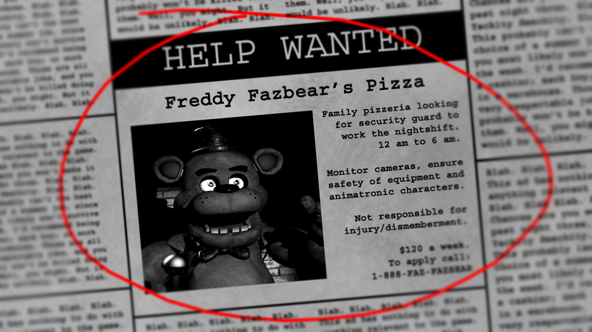

webgl burn2 shits
blur: 1
fire damage: 229.5
fire cutoff: .5
alpha?
left click to draw fire
right click to erase
press
T
a few times to cycle through the shaders working together
press
R
to reset the image
press
C
to clear the fire
choose a custom image
reset
clear fire
save canvas image
_
